5. Etude de cas avec Oracle Database Express Edition 11g Release 2
5.1. Installation des outils
Les outils à installer sont les suivants :
- le SGBD : [http://www.oracle.com/technetwork/products/express-edition/downloads/index.html] ;
- un outil d'administration : EMS SQL Manager for Oracle Freeware [http://www.sqlmanager.net/fr/products/oracle/manager/download] ;
- un client Oracle pour .NET : ODAC 11.2 Release 5 (11.2.0.3.20) with Oracle Developer Tools for Visual Studio : [http://www.oracle.com/technetwork/developer-tools/visual-studio/downloads/index.html].
Dans les exemples qui suivent, l'utilisateur system a le mot de passe system.
Lançons Oracle [1] puis l'outil [SQL Manager Lite for Oracle] avec lequel on va administrer le SGBD [2].
| 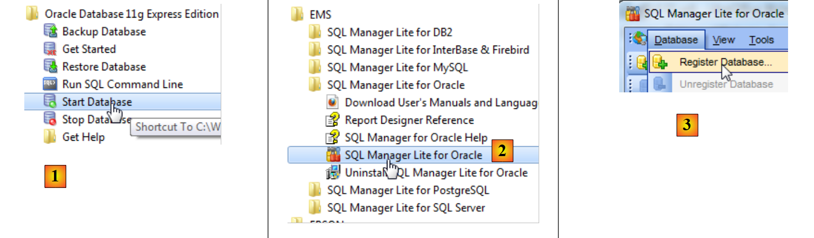 |
- en [3], nous nous connectons à une base existante ;
| 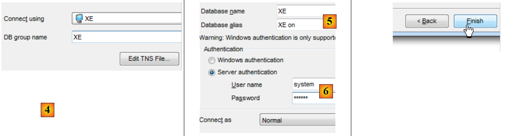 |
- en [4], nous utilisons le service Oracle XE pour se connecter ;
- en [5], on indique le nom de la base XE ;
- en [6], on se connecte en tant que system / system ;
- en [7], on termine l'assistant ;
| 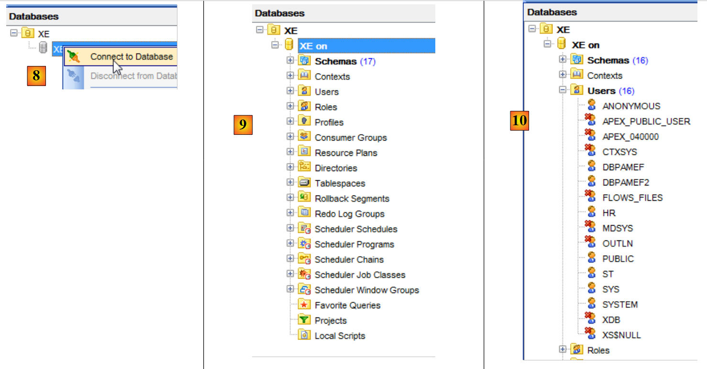 |
- en [8], on se connecte à la base ;
- en [9], on est connecté ;
- parce qu'on s'est connecté en tant que l'utilisateur system / system qui a des droits étendus, nous pourrons par exemple gérer les utilisateurs [10] ;
| 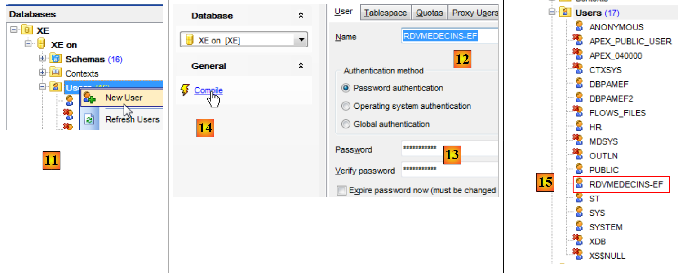 |
- en [11], on crée un nouvel utilisateur ;
- en [12], il s'appellera [RDVMEDECINS-EF] ;
- en [13], et aura le mot de passe rdvmedecins ;
- en [14], on valide la création de l'utilisateur ;
- en [15], l'utilisateur a été créé ;
| 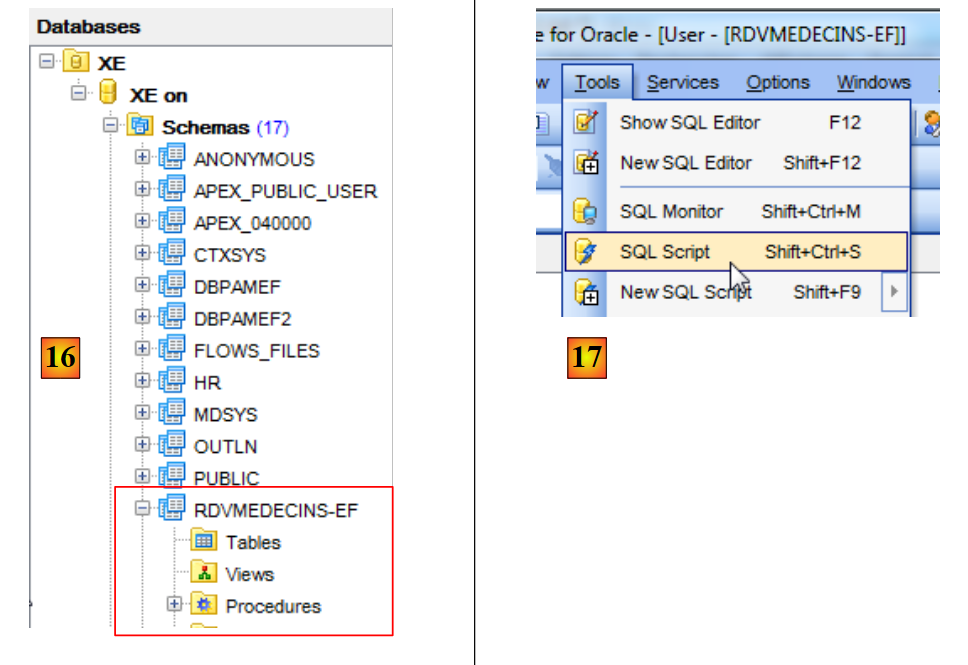 |
- en [16], l'utilisateur [RDVMEDECINS-EF] est également un schéma de base de données ;
- en [17], l'utilisateur tel qu'il a été créé n'a pas suffisamment de droits. Nous lui en donnons via un script SQL ;
| 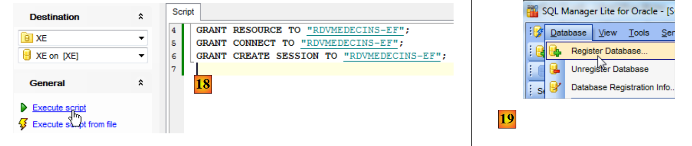 |
- en [18], le script exécuté ;
- en [19], on va essayer de se connecter sous l'identité de [RDVMEDECINS-EF] afin de voir ce qu'il peut faire. Pour cela, nous commençons par enregistrer une nouvelle base dans [EMS Manager] ;
| 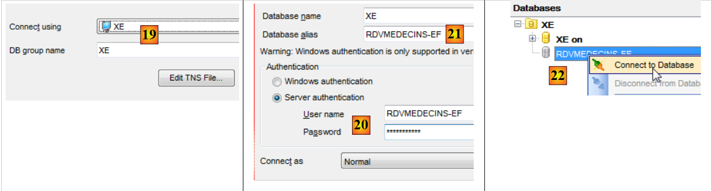 |
- en [19], on se connecte via le service XE ;
- en [20], on se connecte sous l'identité RDVMEDECINS-EF / rdvmedecins ;
- en [21], on donne un alias qui reflète le nom de l'utilisateur connecté ;
- en [22], on se connecte à Oracle avec les informations données ;
| 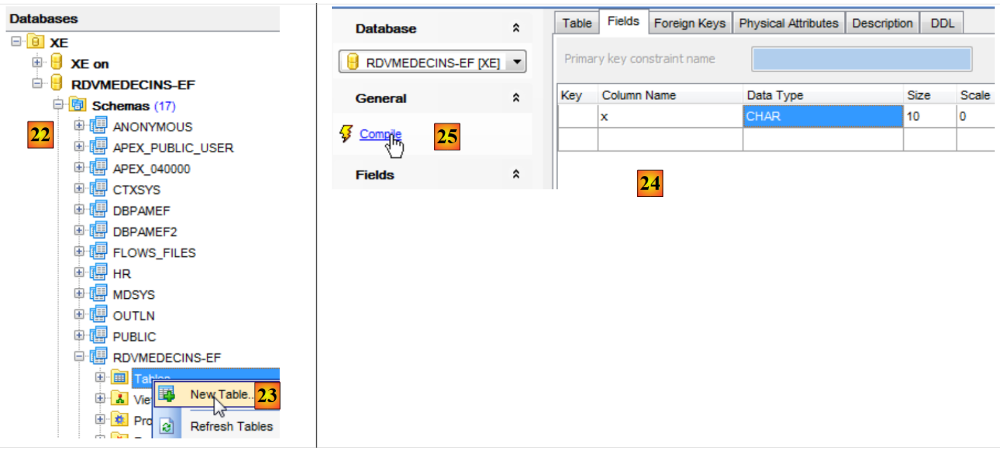 |
| 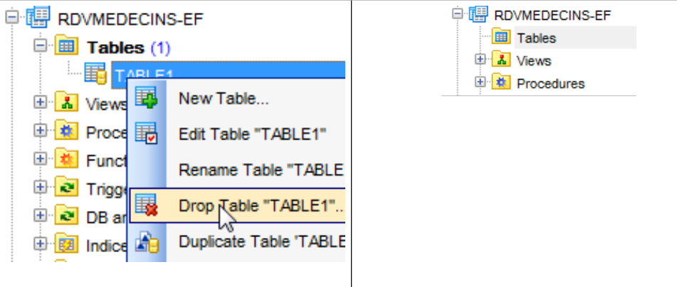 |
- en [22], on a réussi à se connecter ;
- en [23], on essaie de créer une table dans le schéma [RDVMEDECINS-EF] ;
- en [24], on définit une table quelconque ;
- en [25], on valide sa définition ;
| 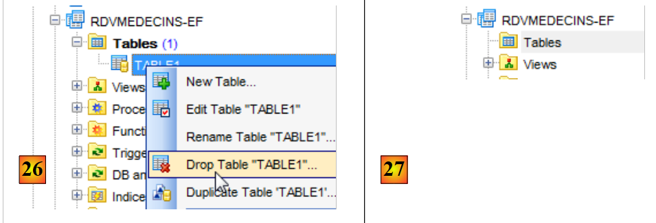 |
- en [26], la table a été créée. On la supprime ;
- en [27], elle a été supprimée.
Maintenant que nous avons un utilisateur avec suffisamment de droits, nous allons créer le projet VS 2012 qui va créer les tables du schéma [RDVMEDECINS-EF] à partir de la définition des entités.
5.2. Création de la base à partir des entités
Nous commençons par dupliquer le dossier du projet [RdvMedecins-SqlServer-01] dans [RdvMedecins-Oracle-01] [1] :
| 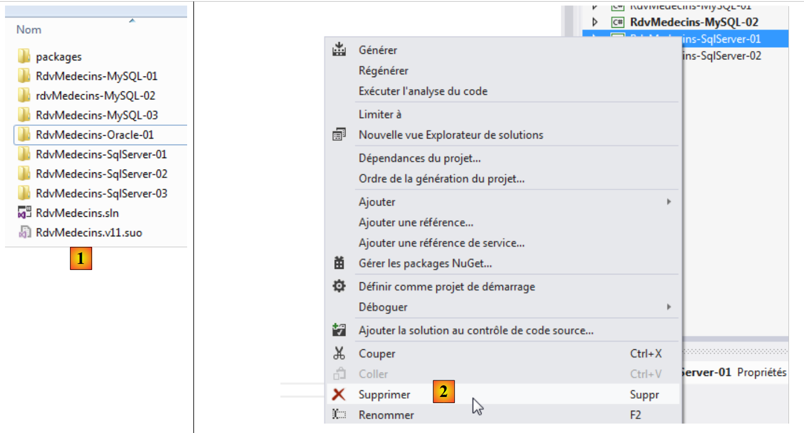 |
- en [2], dans VS 2012, nous supprimons le projet [RdvMedecins-SqlServer-01] de la solution ;
| 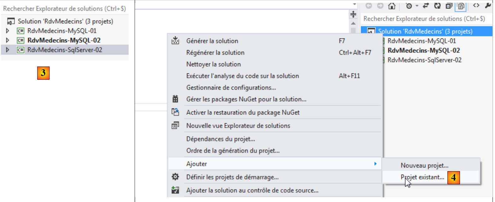 |
- en [3], le projet a été supprimé ;
- en [4], on en rajoute un autre. Celui-ci est pris dans le dossier [RdvMedecins-Oracle-01] que nous avons créé précédemment ;
| 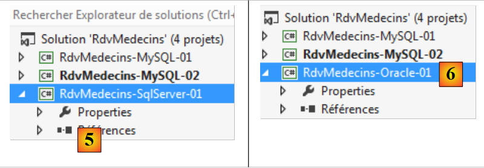 |
- en [5], le projet chargé s'appelle [RdvMedecins-SqlServer-01] ;
- en [6], on change son nom en [RdvMedecins-Oracle-01]
| 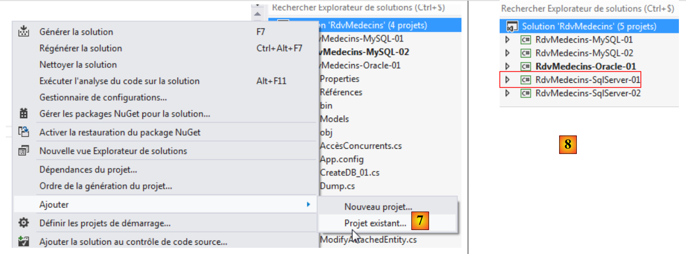 |
- en [7], on rajoute un autre projet à la solution. Celui-ci est pris dans le dossier [RdvMedecins-SqlServer-01] du projet que nous avons supprimé de la solution précédemment ;
- en [8], le projet [RdvMedecins-SqlServer-01] a réintégré la solution.
Le projet [RdvMedecins-Oracle-01] est identique au projet [RdvMedecins-SqlServer-01]. Il nous faut faire quelques modifications. Dans [App.config], nous allons modifier la chaîne de connexion et le [DbProviderFactory] qu'on doit adapter à chaque SGBD.
- ligne 3 : l'utilisateur et son mot de passe ;
- lignes 6-11 : le DbProviderFactory. La ligne 9 référence une DLL [Oracle.DataAccess] que nous n'avons pas. On se la procure avec NuGet [1] :
| 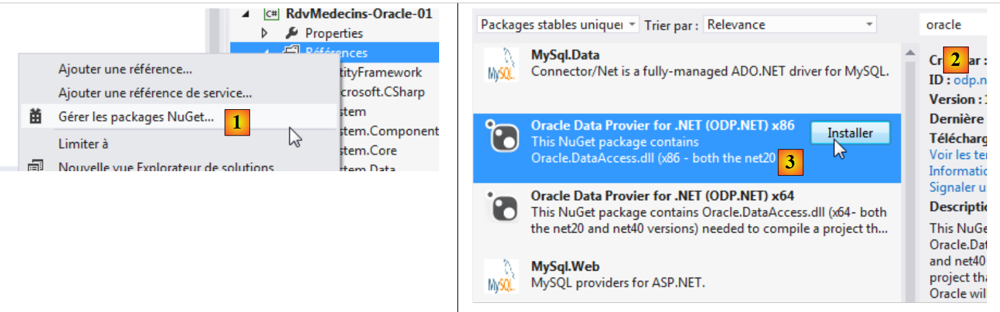 |
- en [2], dans la zone de recherche on tape le mot clé oracle ;
- en [3], on choisit le paquetage [Oracle Data Provider] qui va bien. C'est le connecteur ADO.NET d'Oracle ;
| 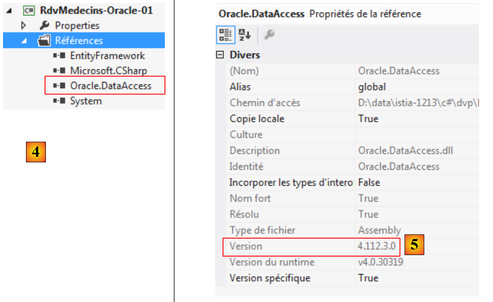 |
- en [4], la référence ajoutée ;
- en [5], dans [App.config], il faut mettre la version correcte de la DLL. On la trouve dans ses propriétés.
Dans le fichier [Entites.cs], il faut adapter le schéma des tables qui vont être générées. Le schéma utilisé est le nom de l'utilisateur propriétaire des tables.
Nous configurons l'exécution du projet :
| 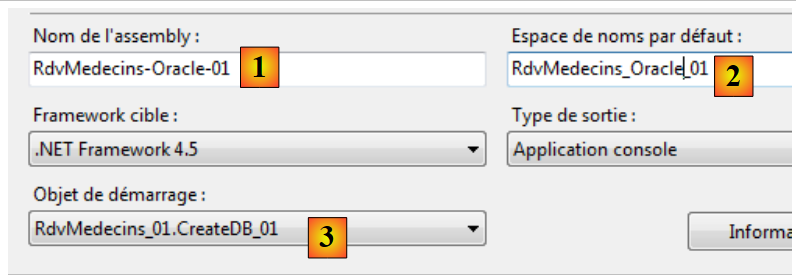 |
- en [1], on donne un autre nom à l'assembly qui va être généré ;
- en [2], ainsi qu'un autre espace de noms par défaut ;
- en [3], on désigne le programme à exécuter.
A ce stade, il n'y a pas d'erreurs de compilation. Exécutons le programme [CreateDB_01]. On obtient l'exception suivante :
On se rappelle avoir eu la même erreur avec MySQL. C'est lié au type du champ Timestamp des entités. Nous faisons la même modification. Dans les entités, nous remplaçons les trois lignes
par les suivantes :
On change donc le type de la colonne qui passe de byte[] à int?. On se rappelle qu'aussi bien pour SQL Server que pour MySQL, la colonne des tables qui servait à gérer la concurrence d'accès recevait une valeur du SGBD à chaque fois qu'une ligne était insérée ou modifiée. A partir de maintenant, nous allons utiliser un champ d'entité qui sera un entier. Dans le SGBD, nous utiliserons des procédures stockées pour incrémenter cet entier d'une unité, à chaque fois qu'une ligne sera insérée ou modifiée.
Nous faisons la modification précédente pour les quatre entités puis nous réexécutons l'application. Nous obtenons alors l'erreur suivante :
La ligne 1 indique que le connecteur ADO.NET d'Oracle n'est pas capable de supprimer la base existante. Rappelons ce qui se passe. Le code de [CreateDB_01.cs] est le suivant :
La ligne 15 enclenche l'exécution de la classe [RdvMedecinsInitializer] (ligne 12). Celle-ci est la suivante :
Elle dérive de la classe [DropCreateDatabaseAlways] qui essaie de supprimer puis de recréer la base. Nous changeons la définition de la classe en :
La création de la base n'est faite que si elle n'existe pas. On réexécute [CreateDB_01.cs] et là il n'y a plus d'erreurs. Mais dans [EMS Manager], on constate que la base [RDVMEDECINS-EF] est restée vide. Parce qu'EF 5 a trouvé une base existante, il n'a rien fait. Il ne fait quelque chose que si la base n'existe pas. A partir de là, on tourne en rond. En effet, la chaîne de connexion au SGBD est la suivante :
Ligne 2, la chaîne de connexion utilise non pas le nom d'une base de données mais le nom d'un utilisateur. Celui-ci doit exister.
Nous sommes amenés alors à construire la base de données [RDVMEDECINS-EF] à la main avec l'outil [EMS Manager for Oracle]. Nous ne décrivons pas toutes les étapes mais simplement les plus importantes.
La base Oracle sera la suivante :
Les tables
 |
Les différentes tables ont les clés primaires et étrangères qu'avaient ces mêmes tables dans les deux exemples précédents. Les clés étrangères ont notamment l'attribut ON DELETE CASCADE.
Les séquences
On a créé ici des séquences Oracle. Ce sont des générateurs de nombres consécutifs. Il y en a 5 [1].
| 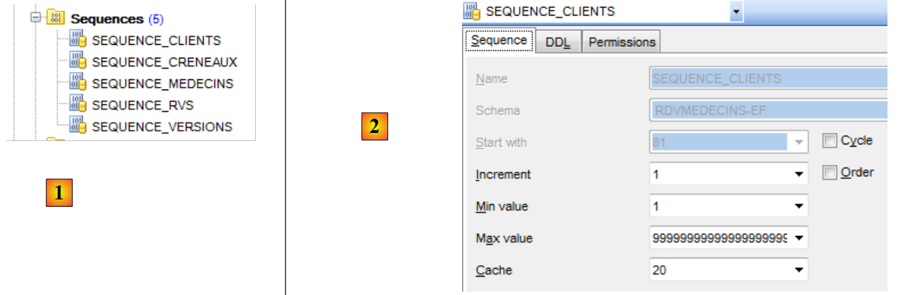 |
- en [2], nous voyons les propriétés de la séquence [SEQUENCE_CLIENTS]. Elle génère des nombres consécutifs de 1 en 1, à partir de 1 jusqu'à une valeur très grande.
Toutes les séquences sont bâties sur le même modèle.
- [SEQUENCE_CLIENTS] sera utilisée pour générer la clé primaire de la table [CLIENTS] ;
- [SEQUENCE_MEDECINS] sera utilisée pour générer la clé primaire de la table [MEDECINS] ;
- [SEQUENCE_CRENEAUX] sera utilisée pour générer la clé primaire de la table [CRENEAUX] ;
- [SEQUENCE_RVS] sera utilisée pour générer la clé primaire de la table [RVS] ;
- [SEQUENCE_VERSIONS] sera utilisée pour générer les valeurs des colonnes [VERSIONING] de toutes les tables.
Les triggers
Un trigger est une procédure exécutée par le SGBD avant ou après un événement (Insertion, Modification, Suppression) dans une table. Nous en avons 8 [1] :
| 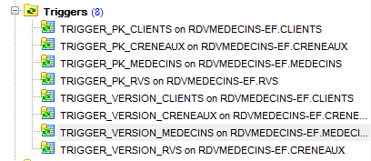 |
Regardons le code DDL du trigger [TRIGGER_PK_CLIENTS] qui alimente la clé primaire de la table [CLIENTS] :
- lignes 1-5 : avant chaque opération INSERT sur la table [CLIENTS] ;
- ligne 6 : la colonne [ID] prendra la valeur suivante de la séquence [SEQUENCE_CLIENTS]. La clé primaire aura ainsi des valeurs consécutives fournies par la séquence.
Les triggers [TRIGGER_PK_MEDECINS, TRIGGER_PK_CRENEAUX, TRIGGER_PK_RVS] sont analogues.
Regardons le code DDL du trigger [TRIGGER_VERSIONS_CLIENTS] qui alimente la colonne [VERSIONING] de la table [CLIENTS] :
- lignes 1-2 : avant chaque opération INSERT ou UPDATE sur la table [CLIENTS] ;
- ligne 8 : la colonne [VERSIONING] prendra la valeur suivante de la séquence [SEQUENCE_VERSIONS]. La colonne [VERSIONING] aura ainsi des valeurs consécutives fournies par la séquence.
Les triggers [TRIGGER_VERSION_MEDECINS, TRIGGER_VERSION_CRENEAUX, TRIGGER_VERSION_RVS] sont analogues. Les quatre colonnes [VERSIONING] tirent leur valeurs de la même séquence.
Le script de génération des tables de la base Oracle [RDVMEDECINS-EF] a été placé dans le dossier [RdvMedecins / databases / oracle]. Le lecteur pourra le charger et l'exécuter pour créer ses tables.
Ceci fait, les différents programmes du projet peuvent être exécutés. Ils donnent les mêmes résultats qu'avec SQL Server sauf pour le programme [ModifyDetachedEntities] qui plante pour la même raison qu'il avait planté avec MySQL. On résoud le problème de la même façon. Il suffit de copier le programme [ModifyDetachedEntities] du projet [RdvMedecins-MySQL-01] dans le projet [RdvMedecins-Oracle-01]. On a alors un nouveau problème :
- lignes 1-4 : le client détaché a bien été mis à jour ;
- ligne 6 : une exception connue. C'est celle qu'on obtient lorsqu'on veut modifier une entité sans avoir la bonne version. Or ici, on ne voulait pas modifier mais supprimer l'entité :
EF 5 a refusé de supprimer client1 en base, car client1 (ligne 6) n'avait pas la même version. On n'avait pas rencontré ce problème avec MySQL. On s'aperçoit peu à peu que les connecteurs ADO.NET de différents SGBD présentent de légères différences. On corrige comme suit :
et ça marche.
5.3. Architecture multi-couche s'appuyant sur EF 5
Nous revenons à notre étude de cas décrite au paragraphe 2, page 6.
 |
Nous allons commencer par construire la couche [DAO] d'accès aux données. Pour ce faire, nous dupliquons le projet console VS 2012 [RdvMedecins-SqlServer-02] dans [RdvMedecins-Oracle-02] [1] :
| 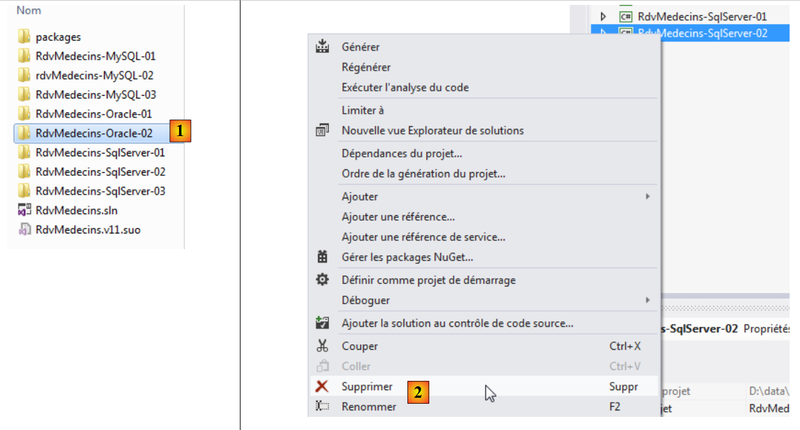 |
- en [2], on supprime le projet [RdvMedecins-SqlServer-02] ;
| 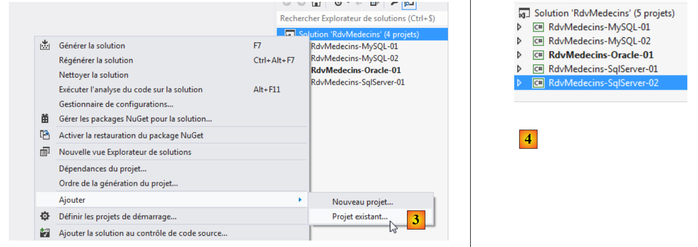 |
- en [3], on ajoute un projet existant à la solution. On le prend dans le dossier [RdvMedecins-Oracle-02] qui vient d'être créé ;
- en [4], le nouveau projet porte le nom de celui qui a été supprimé. On va changer son nom ;
| 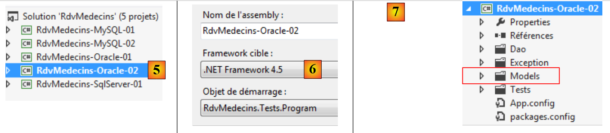 |
- en [5], on a changé le nom du projet ;
- en [6], on modifie certaines de ses propriétés, comme ici le nom de l'assembly ;
- en [7], le dossier [Models] est supprimé pour être remplacé par le dossier [Models] du projet [RdvMedecins-Oracle-01]. En effet, les deux projets partagent les mêmes modèles.
| 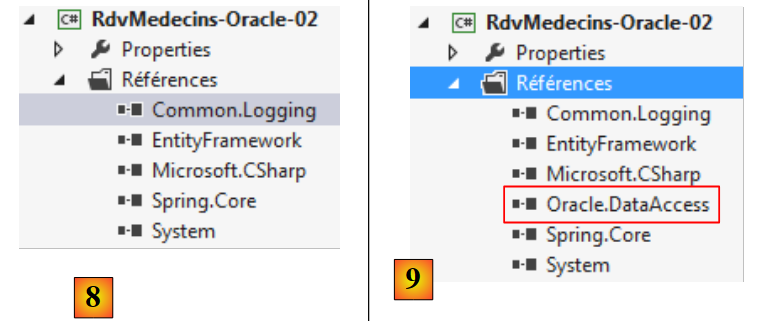 |
- en [8], les références actuelles du projet ;
- en [9], on y a ajouté le connecteur ADO.NET d'Oracle avec l'outil NuGet.
Dans le fichier [App.config], on remplace les informations de la base SQL Server par celles de la base Oracle. On les trouve dans le fichier [App.config] du projet [RdvMedecins-Oracle-01] :
Les objets gérés par Spring changent également. Actuellement on a :
La ligne 7 référence l'assembly du projet [RdvMedecins-SqlServer-02]. L'assembly est désormais [RdvMedecins-Oracle-02].
Ceci fait, nous sommes prêts à exécuter le test de la couche [DAO]. Il faut auparavant prendre soin de remplir la base (programme [Fill] du projet [RdvMedecins-Oracle-01]. Le programme de test réussit.
Nous créons la DLL du projet comme il a été fait pour le projet [RdvMedecins-SqlServer-02] et nous rassemblons l'ensemble des DLL du projet dans un dossier [lib] créée dans [RdvMedecins-Oracle-02]. Ce seront les références du projet web [RdvMedecins-Oracle-03] qui va suivre.
 |
Nous sommes désormais prêts pour construire la couche [ASP.NET] de notre application :
| 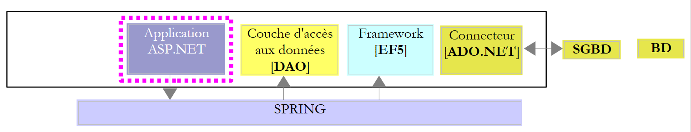 |
Nous allons partir du projet [RdvMedecins-SqlServer-03]. Nous dupliquons le dossier de ce projet dans [RdvMedecins-Oracle-03] [1] :
| 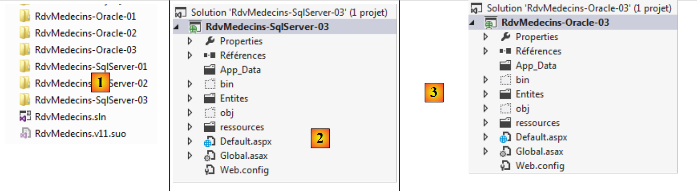 |
- en [2], avec VS 2012 Express pour le web, nous ouvrons la solution du dossier [RdvMedecins-Oracle-03] ;
- en [3], nous changeons et le nom de la solution et le nom du projet ;
| 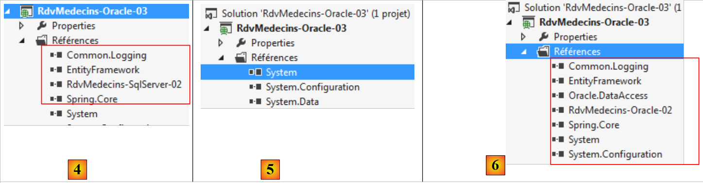 |
- en [4], les références actuelles du projet ;
- en [5], on les supprime ;
- en [6], pour les remplacer par des références sur les DLL que nous venons de stocker dans un dossier [lib] du projet [RdvMedecins-Oracle-02].
Il ne nous reste plus qu'à modifier le fichier [Web.config] On remplace son contenu actuel par le contenu du fichier [App.config] du projet [RdvMedecins-Oracle-02]. Ceci fait, on exécute le projet web. Il marche. On n'oubliera pas de remplir la base avant d'exécuter l'application web.